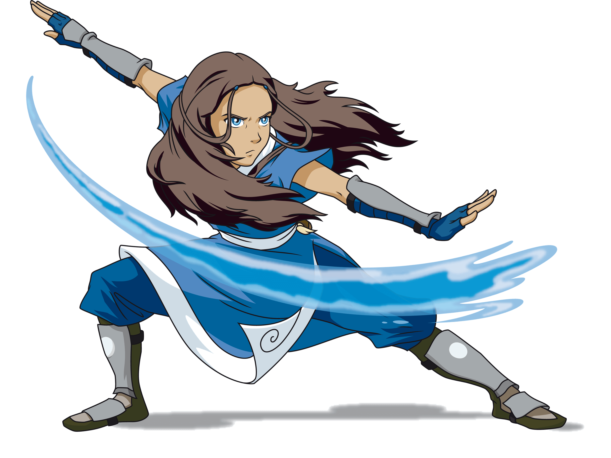
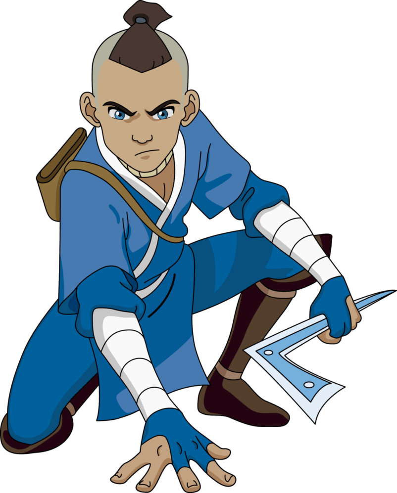

La Tribu Agua es originaria del Norte, pero un grupo pequeño se estableció en el Sur, dando origen a la Tribu Agua del Sur. También hay Maestros Agua en los pantanos del Reino Tierra, aislados de sus tribus hermanas durante generaciones. Ambas tribus son pacíficas y buscan vivir en armonía con la naturaleza y las demás naciones. Sin embargo, debido a los ataques de la Nación del Fuego, el contacto entre las dos tribus se vio interrumpido.
Agua Control
El Agua Control es uno de los cuatro elementos de las Artes de Control, una habilidad mística de hidroquinesis que permite controlar el agua en sus diversas formas. La Tribu Agua, dividida en del Sur, del Norte y del Pantano, utiliza este arte con estilos únicos. La luna es la fuente de poder del agua, y los Maestros Agua aprendieron observando sus influencias en las mareas.
Personajes Favoritos

Katara
Es una maestra agua, nacida y criada en la Tribu Agua del Sur por su abuela Kanna. (LA ODIO)

Sokka
Es el estratega del grupo y el personaje mas gracios.
Espíritualidad y Agua Control
Los Maestros Agua utilizan su chi para controlar el agua, siendo más fuertes durante la noche y especialmente en luna llena. Durante un eclipse lunar, pierden su poder. El Agua Control también es más efectivo cuando llueve, ya que el agua proviene del océano.
La leyenda cuenta que los espíritus Tui y La, representados por dos peces koi, dejaron su inmortalidad para formar parte del mundo físico y controlar el flujo del agua. Su equilibrio espiritual es crucial para el Agua Control. Cuando el Espíritu de la Luna fue asesinado, los Maestros Agua perdieron su poder, pero luego, gracias a Aang y la princesa Yue, el equilibrio fue restaurado al devolver la vida al Espíritu de la Luna.